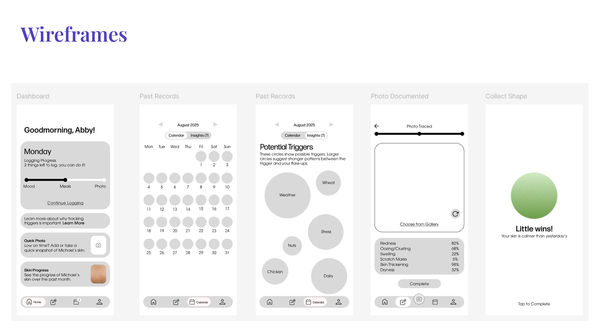
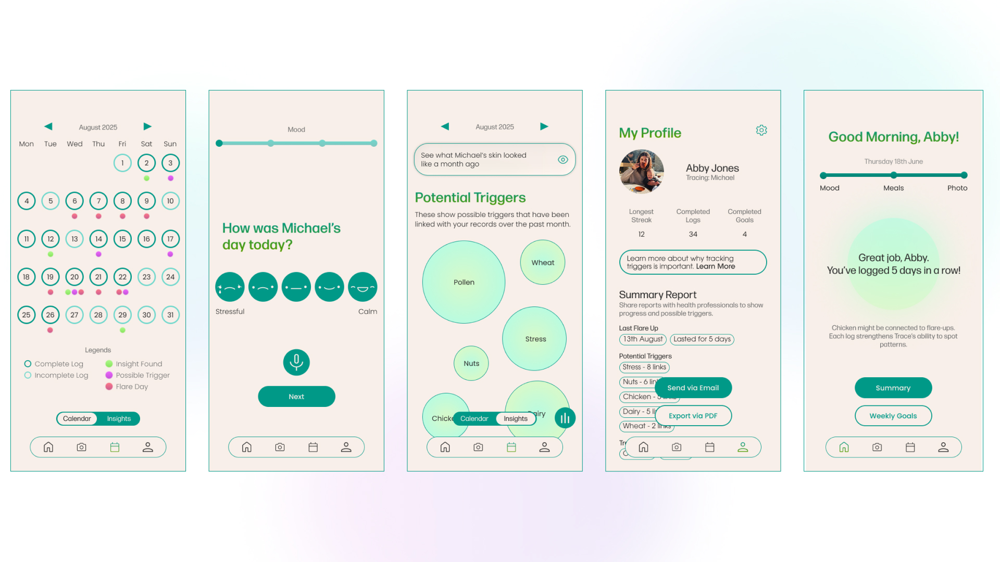
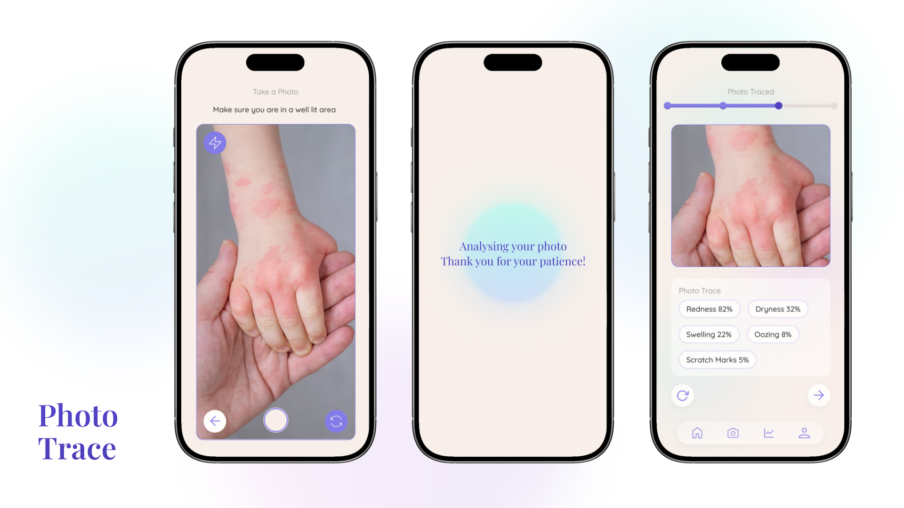
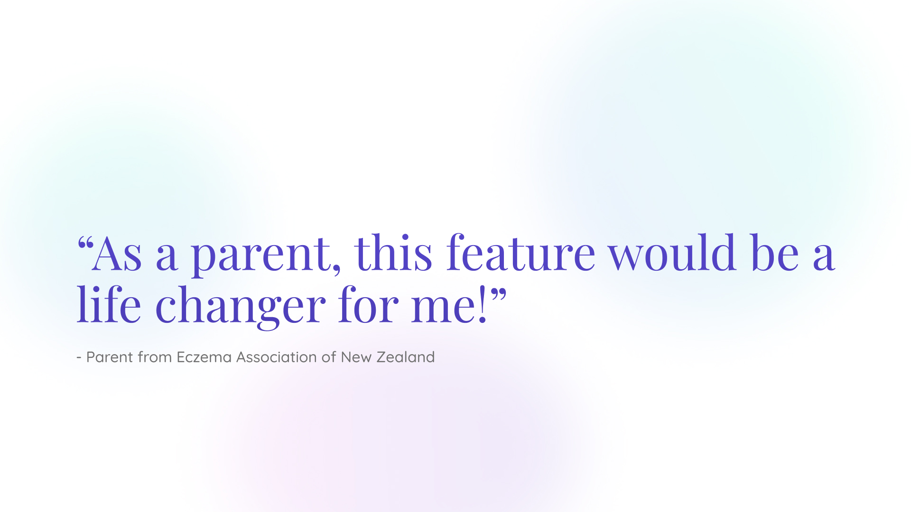
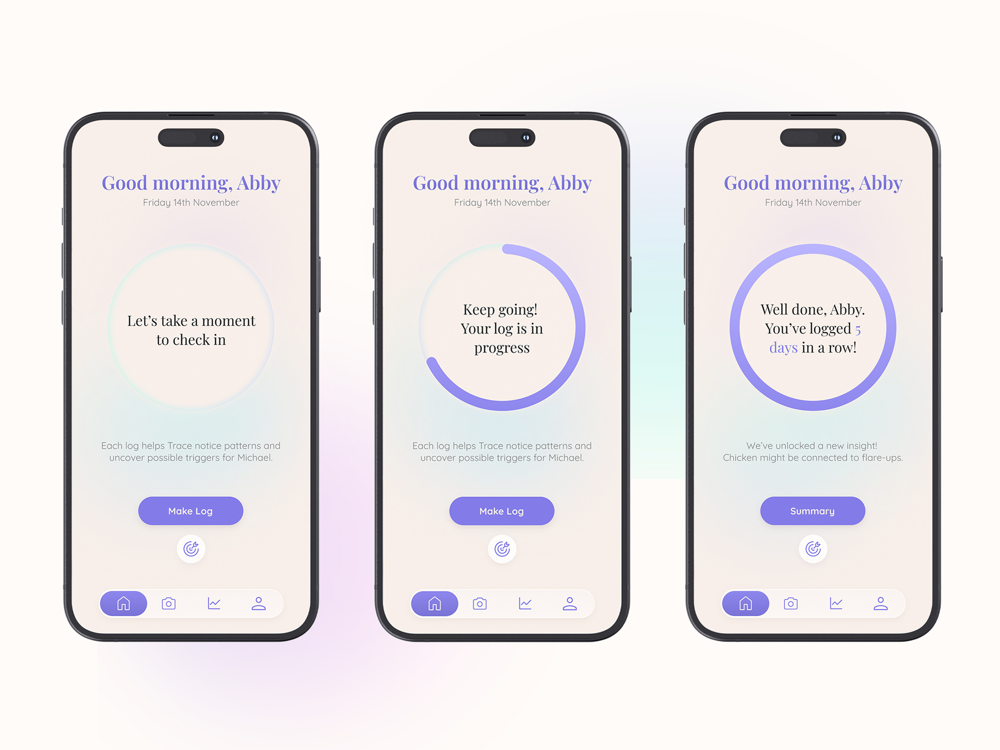
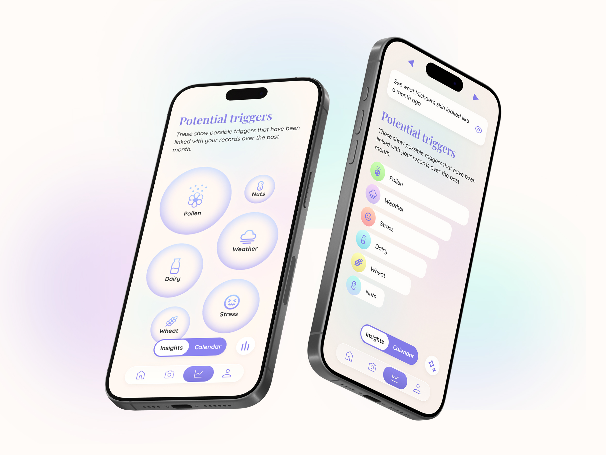
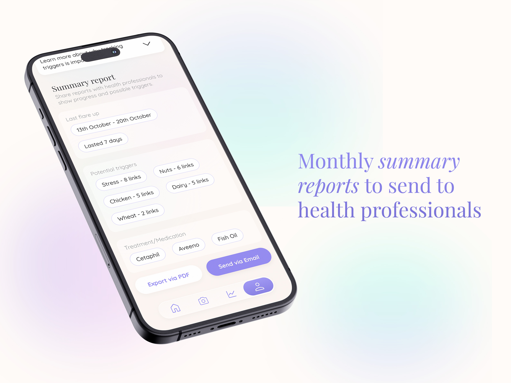

Trace
2025
Trace Final PresentationTOOLS
Figma | HTML & CSS | JS | AI
SKILLS
User Research | Coding | User Testing | UX/UI | Machine Learning | Data Visualisation
BRIEF
How could we create an app that helps parents and caregivers of those suffering from eczema better understand their children's skin and what triggers it?
SOLUTION
An eczema trigger tracking app that is modern, tech-forward and restores calmness to our parents.
USER RESEARCH
Parents and caregivers' main goal was to track their children's skin. Therefore, Trace was designed with this core goal in mind. Upon understanding the current systems for tracking eczema, it became clear that Trace needed to restore calmness to parents' minds and communicate with the target audience in a gentle and nurturing manner.
 USER TESTING
The feedback from user testing helped Trace create a clearer visual design that effectively represented the tone of voice. It also helped to bring more clarity to some of the copy and create a simpler and intuitive user journey. However, most users were intrigued and interested in the app's concept and solution.

PHOTO TRACING
Many parents may not have the time or energy to answer a range of questions about their children's skin daily. So, Trace aims to eliminate that part of the process through Photo Tracing, where carers can easily take a photo of their child's skin and receive a range of statistics about how flared their skin is. This uses tools such as Machine Learning.
ACCESSIBILITY
Due to the busy nature of some carers and individuals, whether it involves folding clothes, cooking, or cleaning, Trace has implemented a voice log feature. This feature allows users to log hands-free, increasing accessibility and enabling them to easily integrate logging into their daily routines and habits. For some parents who preferred a simple and quick view of the potential triggers, there is a graph view of the data visualisation..
REFLECTION
Trace is a project that deeply resonated with me personally. Growing up with eczema, I have seen the effects that it has had on my family. Through this project, I gained a deeper understanding of UX processes and a better understanding of users. The conversations had throughout the creation of this project were impactful and gave me more passion for creating designs that can cause an impact.
  